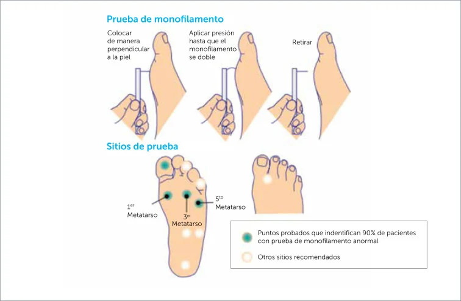

Objetivos del Programa PSCV
Objetivo General
Reducir la incidencia de eventos cardiovasculares a través del control y compensación de los factores de riesgo cardiovascular (FRCV) en Atención Primaria de Salud (APS), y mejorar el seguimiento de personas que ya han tenido un evento cardiovascular para prevenir morbilidad, mortalidad prematura y mejorar la calidad de vida.
Objetivos Específicos
- Reducir el riesgo cardiovascular (RCV) de las personas bajo control.
- Fomentar estilos de vida saludables: abandono del tabaco, alimentación, actividad física.
- Alcanzar niveles de presión arterial óptimos en personas con HTA.
- Mejorar el control metabólico de personas con diabetes mellitus tipo 2.
- Mejorar los niveles de colesterol en personas con dislipidemia.
- Pesquisar precozmente la enfermedad renal crónica en personas con FRCV.
- Prevención secundaria en personas con antecedentes de enfermedades cardiovasculares.
Cuidados del Paciente
| Componente del Modelo | Descripción |
|---|---|
| Centrado en la persona | Respeto por derechos, creencias, preferencias y valores. Toma de decisiones informada en colaboración (Ley 20.584). |
| Trabajo en equipo multidisciplinario | Equipo base: médico, enfermera/o, nutricionista, TENS. Ideal incluir QF, psicólogo, kinesiólogo, asistente social, podólogo, profesor de EF. |
| Intervenciones de autocuidado | Talleres de automanejo, educación en estilos de vida saludables, adherencia al tratamiento farmacológico. |
| Enfoque familiar y comunitario | Integra familia, comunidad y red social de la persona en el plan de cuidado. |
| Planificación individualizada | El médico establece diagnósticos, estratifica según RCV y diseña un plan de cuidado y seguimiento individual. |
Patologías Incluidas en el PSCV
- Hipertensión Arterial (HTA) — personas de 15 años y más con PAS ≥140 y/o PAD ≥90 mmHg confirmadas.
- Diabetes Mellitus tipo 2 (DM2)
- Dislipidemia — Colesterol Total >240 mg/dl, LDL >160 mg/dl o TG >200 mg/dl.
- Tabaquismo — en personas de 55 años y más.
- Enfermedad cardiovascular ateroesclerótica establecida: coronaria, cerebrovascular, arterial periférica, aórtica, renovascular, carotídea.
Pesquisa de FRCV y Criterios de Derivación
Pesquisa de Factores de Riesgo Cardiovascular en APS
Cualquier contacto con el sistema de salud debe ser utilizado como oportunidad para detectar factores de riesgo cardiovascular.
-
1EMPA/EMPAM: Examen de medicina preventiva del adulto y adulto mayor. Detecta precozmente enfermedades prevenibles o controlables según edad y sexo.
-
2Programa Vida Sana: Deriva personas pesquisadas con DM, HTA, dislipidemia o tabaquismo (≥55 años).
-
3Servicio de Urgencia: Sospecha de HTA, DM o dislipidemia debe derivarse a control ambulatorio para confirmación.
-
4Salud de la mujer: Controles ginecológicos, embarazo, puerperio, climaterio son oportunidades preventivas.
-
5Consulta de morbilidad: Oportunidad para detectar FRCV y rescatar pacientes del PSCV sin controles o descompensados.
-
6Licencia de conducir: Personas con PA ≥140/90 mmHg se derivan al CESFAM para perfil de PA.
Criterios de Derivación para Ingreso al PSCV
Se ingresa al programa con uno o más de los siguientes criterios:
| Patología/FR | Criterio de ingreso | Urgencia |
|---|---|---|
| Tabaquismo | Toda persona ≥55 años que fume tabaco. | Programado |
| ECV establecida | IAM, angina, ACV/TIA, enfermedad arterial periférica, aórtica, renovascular o carotídea. | Inmediato |
| HTA | PAS ≥140 y/o PAD ≥90 mmHg (confirmada por perfil de PA). Si PAS ≥180 y/o PAD ≥110 mmHg: derivar en ≤24 h. | ≤24 h si ≥180/110 |
| DM2 | Glicemia >200 mg/dl con síntomas; dos glicemias en ayuno ≥126 mg/dl; glicemia ≥200 mg/dl a las 2h en PTGO. | ≤24 h si sintomático |
| Dislipidemia | Colesterol Total >240 mg/dl; LDL >160 mg/dl; Triglicéridos >200 mg/dl (ayuno ≥12 h). | Programado |
Screening Diagnóstico de HTA: Perfil de PA con Técnica Estandarizada
- En cada visita: 2 o más tomas separadas por 30 segundos, luego promediar.
- Primera vez: tomar PA en ambos brazos. Visitas siguientes: solo en el brazo con cifra más elevada.
- Si promedio PAS ≥140 y/o PAD ≥90 mmHg → diagnóstico presuntivo de HTA → derivar al médico para confirmación.
- MAPA 24 h: útil ante sospecha de HTA "enmascarada" o "bata blanca".
- Una medición aislada NO hace diagnóstico, excepto si PAS ≥180 y/o PAD ≥110 mmHg (derivar en ≤24 h).
- GES: plazo de 45 días para confirmar o descartar HTA/DM desde la sospecha.
Ingreso al PSCV y Exámenes Requeridos
Actividad Médica — Fase de Compensación al Ingreso
El ingreso al PSCV es la consulta médica donde el paciente acude con los resultados de todos sus exámenes de ingreso (HTA y/o DM). El médico:
- Confirma diagnóstico(s) y estratifica según RCV individual.
- Informa derechos asociados al RGES (GES) si corresponde.
- Diseña plan de cuidado y seguimiento individualizado.
- Inicia tratamiento farmacológico según Guías de Práctica Clínica (GPC).
- Si la espera para ingreso médico es superior, se inicia diagnóstico y tratamiento en consulta de morbilidad.
Exámenes Requeridos para Ingreso al PSCV
| Examen | Aplica en |
|---|---|
| Hematocrito | Hipertensión arterial y Diabetes Mellitus tipo 2 |
| Glicemia en ayuno | Hipertensión arterial y Diabetes Mellitus tipo 2 |
| Perfil lipídico (CT, LDL, HDL, TG) | Hipertensión arterial y Diabetes Mellitus tipo 2 |
| Creatinina plasmática | Hipertensión arterial y Diabetes Mellitus tipo 2 |
| Uricemia | Hipertensión arterial y Diabetes Mellitus tipo 2 |
| Electrolitos plasmáticos (Na, K) | Hipertensión arterial y Diabetes Mellitus tipo 2 |
| Orina completa | Hipertensión arterial y Diabetes Mellitus tipo 2 |
| Electrocardiograma (ECG) | Hipertensión arterial y Diabetes Mellitus tipo 2 |
| Razón albúmina/creatinina en orina (RAC) | Hipertensión arterial y Diabetes Mellitus tipo 2 |
| Hemoglobina glicosilada (HbA1c) | Solo Diabetes Mellitus tipo 2 |
| Fondo de ojo | Solo Diabetes Mellitus tipo 2 (solicita el médico en el ingreso) |
Todo paciente que ingrese al PSCV debe tener en su ficha: formulario de ingreso con datos y exámenes, exámenes originales y perfil de PA, constancia de información GES y exámenes complementarios de EMPA/EMPAM si corresponde.
Funciones e Intervenciones del Profesional de Enfermería
Funciones del Profesional de Enfermería en el PSCV
- Buscar activamente elementos de descompensación y daño de órganos blancos en cada control.
- Solicitar apoyo médico inmediato o derivar oportunamente según hallazgos.
- Aplicar la pauta de prevención de úlceras en pie diabético (ERUPD).
- Realizar educación en insulinoterapia a personas con DM que requieran insulina.
- Valorar adherencia al tratamiento farmacológico (test de Morisky-Green).
- Aplicar tamizaje de depresión (PHQ-9) en personas con DM, ECV o baja adherencia.
- Registrar correctamente en ficha clínica electrónica (Rayen), formulario cardiovascular y REM.
- Realizar y/o supervisar la técnica estandarizada de medición de PA.
- Coordinar y articular con el equipo multidisciplinario (nutricionista, médico, TENS, QF).
- Rescatar pacientes sin controles o con controles vencidos.
Intervenciones del Profesional de Enfermería
| Ámbito | Intervención |
|---|---|
| Valoración clínica | Medición de signos vitales y parámetros antropométricos (PA, FC, IMC, circunferencia de cintura). Valoración de patrones de salud alterados por anamnesis. |
| Evaluación del pie | Aplicar ERUPD: inspección, sensibilidad con monofilamento 10 g, pulsos pedio y tibial posterior, revisión de calzado. Clasificar riesgo bajo/moderado/alto/máximo. |
| Educación individual | Alimentación saludable, actividad física, autocuidado del pie, signos de alarma, técnica de administración de insulina, automonitoreo de glicemia capilar. |
| Adherencia | Aplicar test de Morisky-Green. Identificar barreras. Reforzar importancia del tratamiento. |
| Salud mental | Aplicar PHQ-9 en DM, ECV establecida o baja adherencia. Derivar a salud mental si hay síntomas depresivos. |
| Derivación | Derivar a médico, nutricionista, QF, podología, salud mental o nivel secundario según criterios. |
| Registro | Registrar en ficha electrónica: formulario Salud Cardiovascular Integral, ERUPD, QUALIDIAB, órdenes de exámenes y próximo control. |
| Rescate | Identificar personas sin controles vigentes en cada atención. Coordinar citación con SOME. |
Metas de Compensación
Metas según Riesgo Cardiovascular — Menores de 65 años
Las metas de tratamiento dependen del RCV: a mayor riesgo, mayor exigencia terapéutica.
LDL <130 mg/dl · HbA1c <7% · Control c/6–12 meses
LDL <100 mg/dl · HbA1c <7% · Control c/6 meses
LDL <70 mg/dl · HbA1c <7% · Control c/3 meses
LDL <55 mg/dl · HbA1c <7% · Control c/3 meses
Metas de Compensación DM2 — Personas de 65 Años y Más
Las metas en adultos mayores deben ajustarse según estado funcional, cognitivo y comorbilidades.
| Estado del Paciente (≥65 años) | Meta HbA1c | Consideraciones |
|---|---|---|
| Saludable, independiente (pocas comorbilidades, funcionalidad e integridad cognitiva conservadas) |
7–7,5% Puede ser <7% si: vida >10 años, sin tendencia a hipoglicemia, terapia simple con bajo riesgo hipoglicemia |
Meta más estricta si las condiciones lo permiten. |
| Frágil | <8% | Evitar hipoglicemia. Preferir fármacos con bajo riesgo hipoglicémico. |
| Estado de salud muy complejo (comorbilidades crónicas terminales; declinación funcional o cognitiva severa) |
<8,5% | Priorizar confort y evitar complicaciones agudas. |
| Cuidados al fin de la vida | Solo evitar hiperglicemia sintomática | No se establecen metas estrictas de HbA1c. |
Control de Salud Cardiovascular
Estructura del Control de Enfermería del PSCV
El control de enfermería del PSCV tiene una estructura estándar que abarca los siguientes componentes:
| Etapa | Contenido / Actividades |
|---|---|
| Acogida | Revisión de ficha clínica, antecedentes y motivo de consulta. Trato cálido y centrado en la persona. |
| Anamnesis | Valoración de patrones de salud alterados (ver tabla específica). Síntomas actuales, adherencia, efectos adversos de fármacos. |
| Mediciones | PA (técnica estandarizada), FC, temperatura, peso, talla, IMC, circunferencia de cintura. Glicemia capilar si corresponde. |
| Examen físico dirigido | Evaluación de pie diabético (ERUPD): inspección, monofilamento, pulsos. Fondo ocular si aplica. |
| Evaluación de compensación | Comparación con metas según RCV. Revisión de exámenes vigentes (HbA1c, perfil lipídico, RAC, creatinina). |
| Detección de comorbilidades | PHQ-9 (depresión), tabaquismo, consumo de alcohol (AUDIT), salud oral. |
| Educación individualizada | Estilos de vida, medicamentos, autocuidado del pie, signos de alarma, insulinoterapia si corresponde. |
| Plan y derivaciones | Solicitud de exámenes, derivación a nutricionista/médico/podología/salud mental según necesidad. |
| Registro | Formulario Salud Cardiovascular Integral en Rayen, ERUPD, QUALIDIAB, REM. |
Primer Control — Enfermería (Fase de Compensación)
En el primer control de enfermería, tras el ingreso médico, la enfermera/o:
- Revisa el plan de cuidado individualizado definido por el médico.
- Verifica comprensión del diagnóstico, tratamiento y metas por parte del paciente.
- Educa sobre la enfermedad, fármacos y signos de alarma.
- Evalúa adherencia farmacológica (Morisky-Green) y barreras.
- Aplica ERUPD si hay DM.
- Detecta factores de riesgo conductuales modificables: priorizando los más factibles de cambiar para el paciente.
- Solicita exámenes de seguimiento según fase (HbA1c a los 3 meses, perfil lipídico a las 6–8 semanas).
- Programa próximo control según RCV y patología.
Controles de Seguimiento — Anamnesis para Valoración de Patrones de Salud Alterados
| Patrón de Salud | Aspectos a valorar en la anamnesis |
|---|---|
| Percepción-manejo de salud | Conocimiento de su(s) patología(s). Adherencia al tratamiento farmacológico y no farmacológico. Asistencia a controles. Hábito tabáquico, consumo de alcohol. |
| Nutricional-metabólico | Patrón alimentario, consumo de sal, azúcares y grasas saturadas. Cambios de peso recientes. Síntomas de hiper/hipoglicemia. |
| Actividad-ejercicio | Tipo, frecuencia e intensidad de actividad física. Sedentarismo. Disnea o dolor torácico al esfuerzo. |
| Sueño-descanso | Calidad del sueño, insomnio, ronquidos (apnea del sueño como FR). Nocturia (puede indicar DM mal controlada). |
| Cognitivo-perceptual | Cefalea, alteraciones visuales, acúfenos (HTA). Dolor o parestesias en extremidades (neuropatía). Orientación y memoria (AM). |
| Autopercepción-autoconcepto | Estado emocional, autoestima, percepción de su estado de salud. Motivación para el cambio. |
| Rol-relaciones | Red de apoyo familiar y social. Cuidador(a) en adulto mayor. Dificultades laborales o económicas asociadas. |
| Sexualidad-reproducción | Disfunción eréctil (indicador de ECV y neuropatía en hombres con DM/HTA). Uso de anticonceptivos con impacto CV. |
| Afrontamiento-tolerancia al estrés | Estrés laboral, familiar. Síntomas depresivos o ansiosos. PHQ-9 si indicado. |
| Valores-creencias | Creencias sobre la enfermedad y los fármacos. Uso de medicina alternativa. Barreras culturales al tratamiento. |
Indicaciones y Educación en PSCV
Las indicaciones educativas deben ser individualizadas, considerando las posibilidades y preferencias de cada persona:
| Área | Contenido educativo clave |
|---|---|
| Alimentación saludable | Reducción de sal (<5 g/día), grasas saturadas y trans, azúcares refinados. Aumento de verduras, frutas, cereales integrales y legumbres. |
| Actividad física | Al menos 150 min/semana de actividad moderada (30 min/día, 5 días). Adaptar según condición clínica. |
| Tabaquismo | Consejería breve en cada control. Derivar a sala ERA / programa de cesación tabáquica si aplica. |
| Medicamentos | Importancia de la adherencia, técnica de administración, efectos adversos y cuándo consultar. NO suspender sin indicación médica. |
| Automonitoreo | Técnica correcta de medición de PA en domicilio. Control de glicemia capilar en DM si indicado. |
| Signos de alarma | Cefalea intensa, alteración visual, dolor torácico, parestesias, debilidad unilateral, hipoglicemia: consultar de inmediato. |
| Cuidado del pie (DM) | Revisión diaria de los pies, higiene, hidratación, calzado adecuado, no caminar descalzo, consultar ante cualquier lesión. |
| Insulinoterapia (si aplica) | Técnica de preparación e inyección, rotación de sitios, conservación, manejo de hipoglicemia. |
Valoración del Pie Diabético
¿A quién evaluar?
Toda persona con DM1 o DM2 bajo control en el PSCV debe contar con evaluación del riesgo de ulceración de los pies (ERUPD), al menos una vez al año, y con mayor frecuencia según el riesgo clasificado.
Examen Físico del Pie: Componentes Mínimos de la Evaluación
| Componente | Contenido de la evaluación |
|---|---|
| Anamnesis dirigida |
|
| Forma del pie / Inspección |
|
| Evaluación Neurológica |
|
| Evaluación Vascular |
|
| Revisión de calzado | Revisión interna y externa del calzado. Identificar puntos de presión, calzado estrecho, inadecuado o desgastado. |
| Factores de riesgo identificados |
|
Clasificación de Riesgo ERUPD y Periodicidad
| Riesgo | Criterio orientador | Frecuencia evaluación | Acción APS enfermería |
|---|---|---|---|
| Bajo | Sin úlcera/amputación previa, sin EAP, sensibilidad protectora normal, sin deformidad relevante. | Anual | Educación breve, revisión de calzado, autocuidado. |
| Moderado | Alteración de sensibilidad protectora, sin EAP ni deformidad significativa asociada. | Cada 6 meses | Educación intensiva, podología preventiva, seguimiento programado. |
| Alto | EAP, deformidad asociada a neuropatía, o combinación de factores que aumentan presión plantar. | Cada 3–6 meses | Seguimiento estrecho, podología priorizada, evaluar sospecha vascular o lesión. |
| Máximo | Antecedente de úlcera previa, amputación o condición de muy alto riesgo clínico. | Cada 1–3 meses | Vigilancia activa, educación reforzada, evaluación médica y priorización ante cualquier lesión. |
Prueba de Monofilamento (Semmes-Weinstein 10 g)

Objetivo
Detectar la pérdida de sensibilidad protectora de los pies, que indica neuropatía periférica y predice riesgo de ulceración en personas con diabetes.
Preparación
- Explicar el procedimiento al paciente.
- Paciente en posición supina o sentado con los pies al descubierto.
- El paciente cierra los ojos (o mira hacia el techo).
- Demostrar el monofilamento en la mano del paciente antes de comenzar.
Técnica
- Aplicar el monofilamento perpendicularmente a la piel.
- Presionar hasta que el filamento se curve (≈10 g de presión), durante 1–2 segundos.
- El paciente responde "sí" al sentir el contacto.
- Variar el ritmo de aplicación para evitar anticipación.
- No aplicar sobre callosidades, cicatrices o úlceras.
Puntos de evaluación
(4 por pie = 8 total)
- Pulpejo del 1er dedo (hallux)
- Cabeza del 1er metatarso (zona plantar)
- Cabeza del 3er metatarso
- Cabeza del 5to metatarso
Algunos protocolos incluyen talón y dorso del pie.
Interpretación
- Normal: siente el monofilamento en todos los puntos.
- Pérdida de sensibilidad protectora (PSP): no siente en ≥1 punto evaluado.
- PSP → riesgo moderado o mayor → ERUPD modificado.
Prevención de Úlceras en Pies de Personas con Diabetes
Principios Generales de Prevención
La evaluación del pie diabético es una intervención clínica preventiva, no un trámite administrativo. Puede evitar infección, hospitalización, amputación y deterioro funcional.
Educación al Paciente — Autocuidado del Pie
| Área | Indicaciones educativas |
|---|---|
| Revisión diaria | Inspeccionar ambos pies cada día, incluso zona interdigital y plantas. Usar espejo si es necesario o pedir ayuda a un familiar. |
| Higiene | Lavar los pies diariamente con agua tibia (nunca caliente) y jabón neutro. Secar bien entre los dedos. |
| Hidratación | Aplicar crema hidratante en talones y planta (no entre los dedos para evitar maceración). |
| Uñas | Cortarlas en línea recta, sin redondear las esquinas. Nunca cortar muy al ras. Si hay dificultad: derivar a podología. |
| Calzado | Usar calzado con horma amplia, suave, sin costuras internas. Revisar el interior antes de ponérselo. Calzado deportivo o terapéutico. No usar zapatos nuevos muchas horas seguidas. |
| Calcetines | Usar calcetines sin costuras, sin elásticos apretados, preferentemente de algodón o bambú. Cambiarlos diariamente. |
| No caminar descalzo | Nunca caminar sin calzado, ni siquiera en el hogar. Usar pantuflas cerradas. |
| Temperatura | No usar bolsas de agua caliente, estufas ni baños de pies calientes (riesgo de quemadura por insensibilidad). |
| Signos de alarma | Consultar el mismo día si aparece: herida, ampolla, cambio de color, dolor intenso, pie frío, secreción o mal olor. |
Acciones de Enfermería según Riesgo ERUPD
| Riesgo | Acciones de enfermería de sector | Podología |
|---|---|---|
| Bajo | Educación breve en autocuidado y calzado. Control anual. | Mínimo 1 atención/año. |
| Moderado | Educación intensiva, adherencia y seguimiento programado c/6 meses. | Mínimo 1 atención/año. |
| Alto | Seguimiento estrecho c/3–6 meses. Derivar a médico si sospecha vascular o lesión. | Mínimo 2 atenciones/año. |
| Máximo | Vigilancia activa c/1–3 meses. Evaluación médica/enfermería y priorización ante cualquier lesión. | Mínimo 2 atenciones/año, priorización según hallazgos. |
Manejo de la Lesión Activa (UPD)
En caso de úlcera activa, el registro clínico debe incluir:
- Formulario Salud Cardiovascular Integral actualizado.
- Evaluación ERUPD.
- Valoración de úlcera de pie diabético.
- Escala San Elián (pronóstico y severidad).
- Formulario VACAB (carga bacteriana y frecuencia de curación).